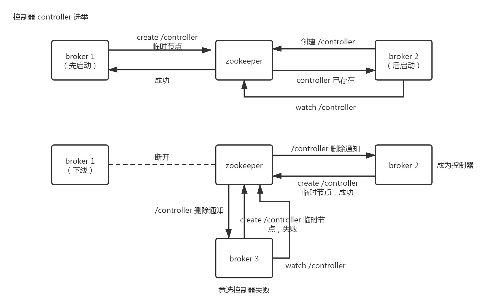
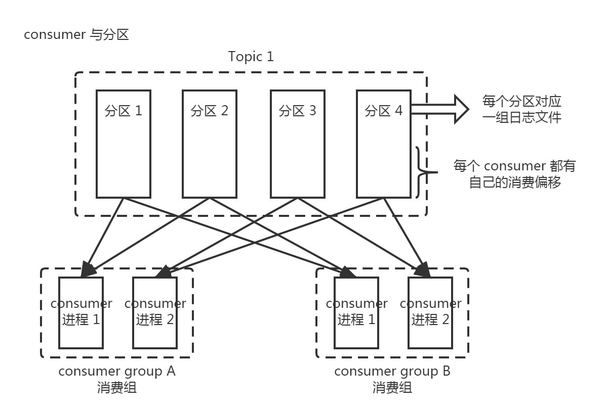
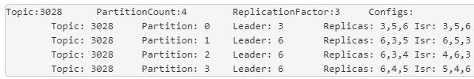
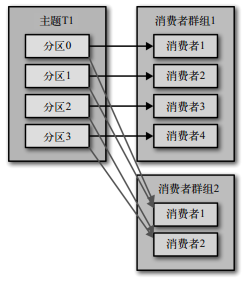

集群基础结构
集群服务器
奇数数量的 kafka 服务器，作为 kafka broker 节点。
奇数数量的 zookeeper 服务器。
kafka 和 zookeeper 服务器数量可以不一致，目前生产环境中 zookeeper 是 3 节点的集群，kafka 是 5 节点集群。
验证集群结构
如果知道 zookeeper 地址，可通过如下方式查看 kafka 集群结构；如果知道 kafka 地址，在 kafka 配置文件 /opt/kafka/config/server.properties 中也能找到依赖的 zookeeper 地址。
[zk: localhost:2181(CONNECTED) 8] ls /brokers/ids
[3, 4, 5, 6]
可见集群有 4 个 brokers（brokers 即 kafka 实例、kafka 服务器），brokers id 为 3/4/5/6，此处 id 与 kafka 服务器配置文件 /opt/kafka/config/server.properties 中的 broker.id 配置对应。
分别获取 4 个 brokers 的运行信息（主机、端口、版本等），可见 kafka 4 个实例为 10.100/10.101/10.102/10.103
[zk: localhost:2181(CONNECTED) 9] get /brokers/ids/3
{“jmx_port”:9999,”timestamp”:”1576064681798”,”endpoints”:[“PLAINTEXT://10.10.10.100:9092”],”host”:”10.10.10.100”,”version”:3,”port”:9092}
[zk: localhost:2181(CONNECTED) 10] get /brokers/ids/4
{“jmx_port”:9999,”timestamp”:”1576066262909”,”endpoints”:[“PLAINTEXT://10.10.10.101:9092”],”host”:”10.10.10.101”,”version”:3,”port”:9092}
[zk: localhost:2181(CONNECTED) 11] get /brokers/ids/5
{“jmx_port”:9999,”timestamp”:”1576065052511”,”endpoints”:[“PLAINTEXT://10.10.10.102:9092”],”host”:”10.10.10.102”,”version”:3,”port”:9092}
[zk: localhost:2181(CONNECTED) 12] get /brokers/ids/6
{“jmx_port”:9999,”timestamp”:”1576118269417”,”endpoints”:[“PLAINTEXT://10.10.10.103:9092”],”host”:”10.10.10.103”,”version”:3,”port”:9092}
命令、配置及日志
约定 kafka 在 /opt/kafka 下，zookeeper 在 /opt/zookeeper 下。
依赖的 zookeeper 操作：
启动：/opt/zookeeper/bin/zkServer.sh start
停止：/opt/zookeeper/bin/zkServer.sh stop
kafka 操作：
启动：/opt/kafka/bin/kafka-server-start.sh -daemon /opt/kafka/config/server.properties
停止：/opt/kafka/bin/kafka-server-stop.sh
重启：先停止后启动，修改配置后无法平滑重启
配置路径：/opt/kafka/config/server.properties
基本配置属性：
host.name=本机 IP
broker.id=任意数字，必须保证集群中唯一
zookeeper.connect=zookeeper服务器列表（使用逗号分割）
auto.create.topics.enable=false（线上是设置禁止自动创建 topic，新建 topic 需要申请手动添加）
数据日志（保存有消息内容，不可手动删除）：
/data/kafka/7000-0（topic-分区）
系统日志：
/opt/kafka/kafka-logs
基础概念
controller 选举

consumer 与分区
每个分区，不能被同一消费组的多个 consumer 进程消费
每个分区，可以同时被不同消费组的多个 consumer 进程消费

常用命令
查看kafka topic列表
1 | /opt/kafka/bin/kafka-topics.sh --zookeeper 10.10.10.151:2181 --list |
此命令查看所有 topic，会包含已创建但未消费的 topic。
如想知道活跃 topic，需要执行 “3. 查看 consumer 组列表”，再遍历所有 consumer 列表，依次执行 “4. 查看 consumer 详情”，提取出对应的 topic，汇总去重后即为所有活跃的 topic。
没有直接命令可查看活跃的 topic。
查看 topic 详情
1 | /opt/kafka/bin/kafka-topics.sh --zookeeper 10.10.10.151:2181 --describe --topic 7000 |
注意：一个 topic 的不同分区，可以分布在不同 broker 上，如上图分区 0 的副本分布在 356，分区 2 的副本分布在 346

查看 consumer 组列表
1 | /opt/kafka/bin/kafka-consumer-groups.sh --new-consumer --bootstrap-server 10.10.10.151:9092 --list |
输出示例
base\Module1\consumer\Class1
base\Module2\consumer\Class2
base\Module3\consumer\Class3
……
这里的输出为消费组的 group.id，在我们的项目中，consumer 启动时会将代码路径设置为 group.id。
查看 consumer 详情
1 | /opt/kafka/bin/kafka-consumer-groups.sh --new-consumer --bootstrap-server 10.10.10.151:9092 --describe --group "base\Es\consumer\Group" |
输出示例
| GROUP | TOPIC | PARTITION | CURRENT-OFFSET | LOG-END-OFFSET | LAG | OWNER |
|---|---|---|---|---|---|---|
| base\Es\consumer\Group | 6030 | 0 | 70213 | 70213 | 0 | rdkafka_/10.10.10.110 |
| base\Es\consumer\Group | 16001 | 0 | unknown | 0 | unknown | rdkafka_/10.10.10.110 |
CURRENT-OFFSET：当前消费位置
LOG-END-OFFSET：末尾位置
两者相减即为 LAG 堆积数量
可以查看到消费的 topic 和分区、偏移量等数据。
注意：消费组包含一组相同的 consumer。如 base\Es\consumer\Group 指消费组，启动的 N 个 consumer 进程属于这个消费组，这些 consumer 进程共同从这个 topic 的不同分区消费数据。
一个分区不会被一个消费者群组内的多个 consumer 消费，但是可以分别被不同消费者群组内的多个 consumer 消费，示意图如下：

查看某个 topic 消息
查看整个 topic 所有消息（简化、高级的 API）
1 | /opt/kafka/bin/kafka-console-consumer.sh --bootstrap-server 10.10.10.151:9092 --zookeeper 10.10.10.151:2181 --topic 7015 |
加上 --from-beginnin 参数则查看全部消息，不加则从尾部开始消费（只能看到新消息）
查看某个 topic 特定分区消息（复杂、低级的 API）：
1 | /opt/kafka/bin/kafka-simple-consumer-shell.sh --broker-list 10.10.10.151:9092 --max-messages 10 --partition 0 --print-offsets --topic 1000 --offset 613745 --no-wait-at-logend |
max-messages 为每次执行命令返回的消息条数
partition 为需要查看消息的特定分区
offset 为消息偏移量，查看该偏移量之后的消息
创建 topic
1 | /opt/kafka/bin/kafka-topics.sh --zookeeper 10.10.10.151:2181 --create --topic 1000 --partitions 4 --replication-factor 3 |
partitions 为分区数
replication-factor 为复制系数、有多少份副本（即 1 份首领副本，N-1 份跟随者副本）
kafka 管理后台设计
mysql kafka_monitor 库保存所有的 topic、consumer 数据，数据来源是研发申请时人工填写。
mongo kafka_monitor 库保存活跃的 topic、consumer 数据，数据来源于定时任务脚本，脚本定期执行 “查看 consumer 组列表 -> 遍历所有 consumer 列表 -> 查看 consumer 详情” 命令，提取到需要的统计数据后更新 mongo（故只保存活跃 topic 和 consumer 信息）。
Q&A
Q：某个分区可以被多个 consumer 消费，那么 offset 是和 consumer 相关的？每个 consumer 单独记录自己的 offset？
A：是的，是的，所以每个 consumer 启动都能找到自己的 offset，而且数据保存在 __consumer_offsets 内置 topic 上
Q：zookeeper 里的 state 数据含义
[zk: localhost:2181(CONNECTED) 3] get /brokers/topics/7000/partitions/2/state
{“controller_epoch”:318,”leader”:4,”version”:1,”leader_epoch”:282,”isr”:[4,5,3]}
A：
controller_epoch：kafka 集群中的控制器选举次数，原有控制器下线后，所有 broker 进行控制器选举，选举一个 broker 成为 controller，该 broker 参与分区首领副本选举。每选出一次控制器，controller_epoch++，如果 broker 收到由控制器发出的包含较旧 epoch 的消息，就会忽略这些消息。
leader：该 topic 的分区首领副本所在的 broker_id
version：默认为 1
leader_epoch：该 topic 的分区首领副本选举次数
isr：保持同步的副本（首领副本所在的 broker 宕机后，有资格成为新的首领副本的副本）所在的 broker_id
问题排查记录
启动 consumer 消费不到数据
查看 consumer 日志，是否分配到分区
查看 kafka 消费组列表，该 consumer 是否存在：
1 | /opt/kafka/bin/kafka-consumer-groups.sh --new-consumer --bootstrap-server 10.10.10.151:9092 --list |
注意没有命令可以直接按照 topic 查找对应的 consumer！
只能获取全部 consumer 列表 -> 遍历列表获取全部 consumer 详情 -> 过滤 topic 得到结果 consumer。
检查消息是否正确发送
1 | /opt/kafka/bin/kafka-console-consumer.sh --bootstrap-server 10.10.10.151:9092 --zookeeper 10.10.10.151:2181 --from-beginnin --topic 1000 |
看看能否找到发送过的消息
nginx 状态码 499，访问接口慢最终超时
可能是 kafka 服务未正常运行引起，ps 检查 kafka 运行状态；
向 kafka 发送测试消息。
consumer 进程数量优化
通过定时脚本执行 “查看 consumer 详情” 命令，在每次的执行结果中对 CURRENT-OFFSET 求和得到 SUM 并记录，两次 SUM 差值 / 脚本运行周期 即为该 consumer 消费速度，同理 LOG-END-OFFSET 可计算出该 consumer 订阅的所有 topic 的消息产生速度。
如消费速度明显小于产生速度，考虑增加 consumer 进程、增加 topic 分区。